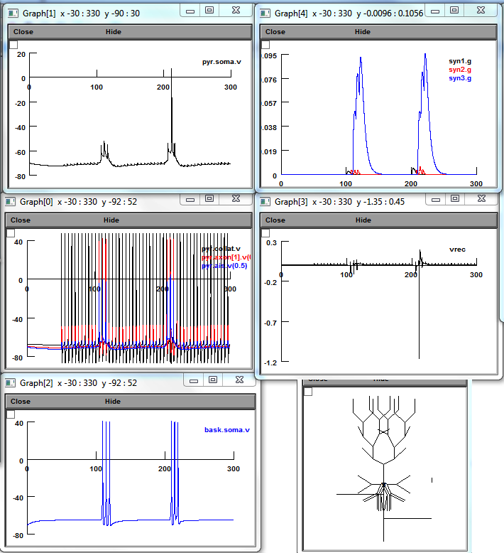
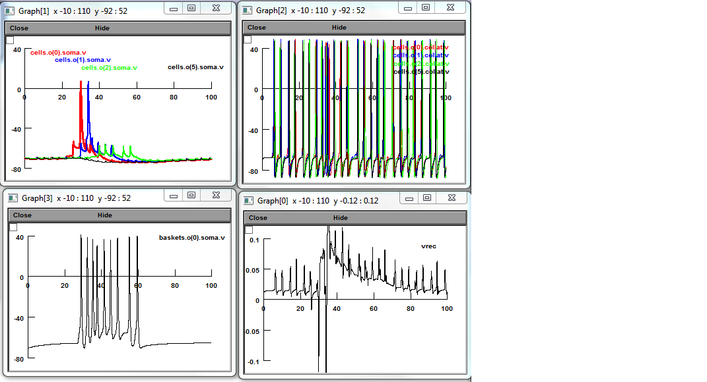
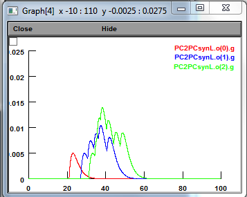
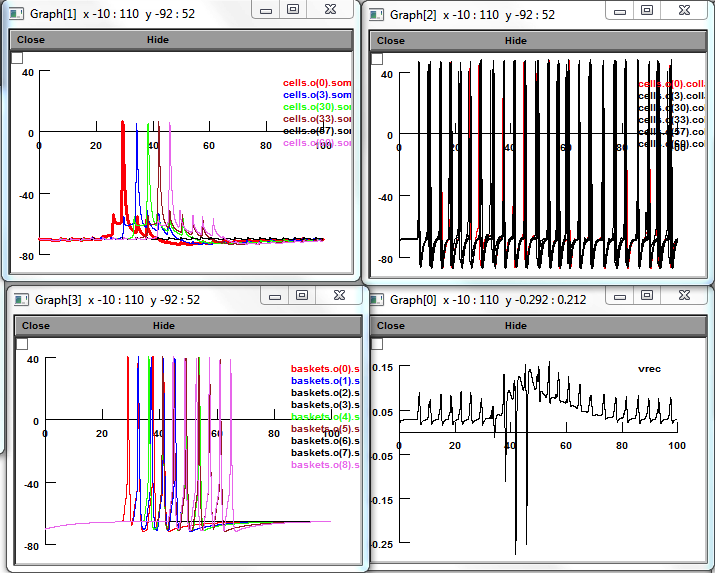
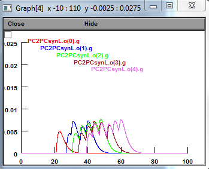
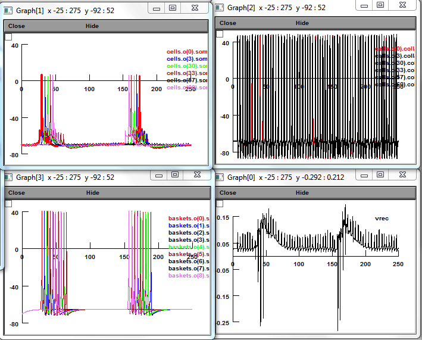
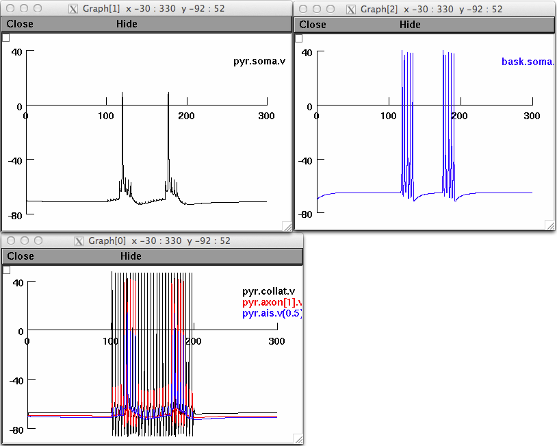
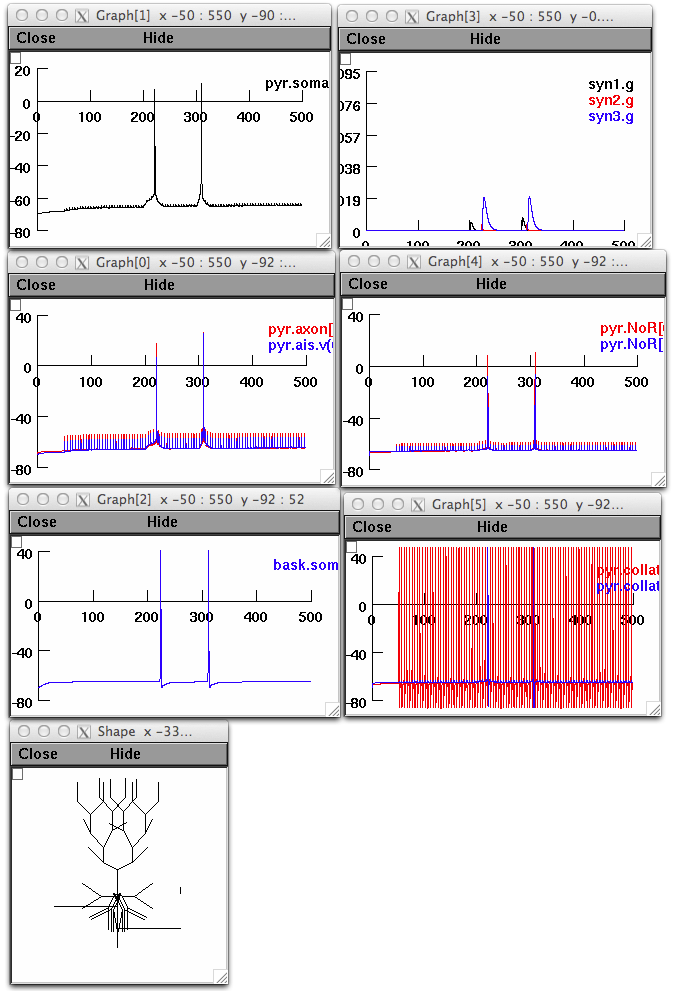

<html><pre>
This is the readme for the model associated with the paper:

N. Vladimirov, Y. Tu, R.D. Traub. Synaptic gating at axonal branches, and
sharp-wave ripples with replay: a simulation study. EJN

This model was contributed by Dr. Nikita Vladimirov. These simulations require NEURON which
is freely available from <a href="http://www.neuron.yale.edu">http://www.neuron.yale.edu</a>

Usage:

1) Run mknrndll module of NEURON in the folder you have unpacked. It will create dlls of
mod files, necessary for NEURON execution.

2) Run one of the top-level NEURON files by clicking Init & Run after starting one of the
below with a command like:

nrngui mosinit_1PC_1IN.hoc

Auto-launch from ModelDB runs the above if your browser is configured properly and you
press the auto-launch button in the showmodel page. Some graphs that were created are
shown below for the respective files:

- mosinit_1PC_1IN.hoc


- mosinit_16PC_1IN.hoc




- mosinit_81PC_9INforward.hoc



- mosinit_81PC_9INforw_reverse.hoc



- mosinit_1PC_1IN_silent2firing.hoc


- mosinit_1PC_1IN_myelinatedAx.hoc


Have fun.
Nikita Vladimirov <nikita.vladimirov@gmail.com>
</pre></html>
